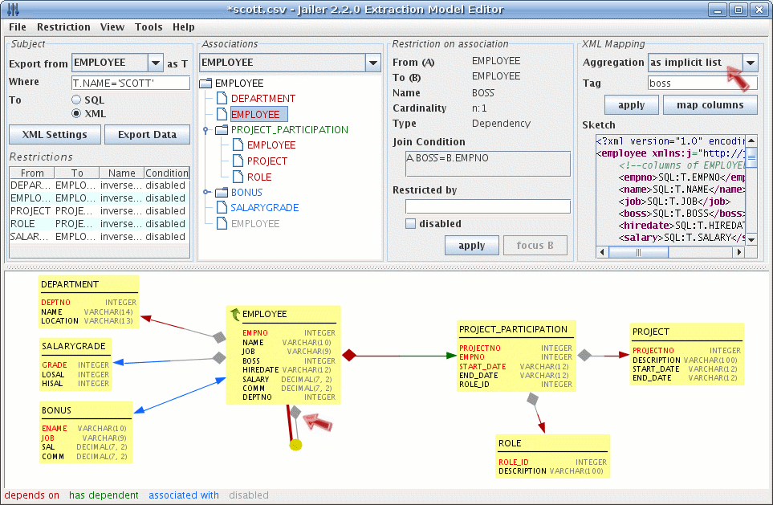

This tutorial shows you how to export data to XML and how to define the
structure of the XML document.
Step 1. Switch to XML-mode.
Load the model scott.csv from previous
tutorial and switch to XML mode. An additional panel named "XML
Mapping" will appear.
Step 2. Export Scott to flat XML
Export data into a file  scott-1.xml.
The XML file contains a simple list of all exported rows, starting with
rows from subject table followed by all other rows in alphabetical
order of their table names. scott-1.xml.
The XML file contains a simple list of all exported rows, starting with
rows from subject table followed by all other rows in alphabetical
order of their table names.
1 <?xml version="1.0" encoding="ISO-8859-15"?>
2 <!--
3 generated by Jailer at Sun Jun 14 13:47:16 CEST 2008 from wisser@desktop
4
5 extraction model: EMPLOYEE where T.NAME='SCOTT' (extractionmodel/scott.csv)
6 database URL: jdbc:db2://localhost/wisser
7 database user: scott
8 Exported Entities: 7
9 DEPARTMENT 2
10 EMPLOYEE 3
11 SALARYGRADE 2
12 -->
13 <entities>
14 <employee>
15 <empno>7566</empno>
16 <name>JONES</name>
17 <job>MANAGER</job>
18 <boss>7839</boss>
19 <hiredate>1981-04-02</hiredate>
20 <salary>2975.00</salary>
21 <deptno>20</deptno>
22 </employee>
23 <employee>
24 <empno>7788</empno>
25 <name>SCOTT</name>
26 <job>ANALYST</job>
27 <boss>7566</boss>
28 <hiredate>1982-12-09</hiredate>
29 <salary>3000.00</salary>
30 <deptno>20</deptno>
31 </employee>
32 <employee>
33 <empno>7839</empno>
34 <name>KING</name>
35 <job>PRESIDENT</job>
36 <hiredate>1981-11-17</hiredate>
37 <salary>5000.00</salary>
38 <deptno>10</deptno>
39 </employee>
40 <department>
41 <deptno>10</deptno>
42 <name>ACCOUNTING</name>
43 <location>NEW YORK</location>
44 </department>
45 <department>
46 <deptno>20</deptno>
47 <name>RESEARCH</name>
48 <location>DALLAS</location>
49 </department>
50 <salarygrade>
51 <grade>4</grade>
52 <losal>2001</losal>
53 <hisal>3000</hisal>
54 </salarygrade>
55 <salarygrade>
56 <grade>5</grade>
57 <losal>3001</losal>
58 <hisal>9999</hisal>
59 </salarygrade>
60 </entities>
Step 3. Export Scott to hierarchically structured XML
In the "XML Mapping" panel you can define the
aggregation-type for each association. If the aggregation-type an
association from table A to B is not 'none', than the XML render of
entities from table B will be embedded into the XML render of the
associated entities from table A.
Set the aggregation-type to 'implicit list' for the
associations:
- BOSS (from EMPLOYEE to EMPLOYEE)
- from EMPLOYEE to DEPARTMENT
- from EMPLOYEE to SALARYGRADE.

Export data into a file scott-2.xml.
|